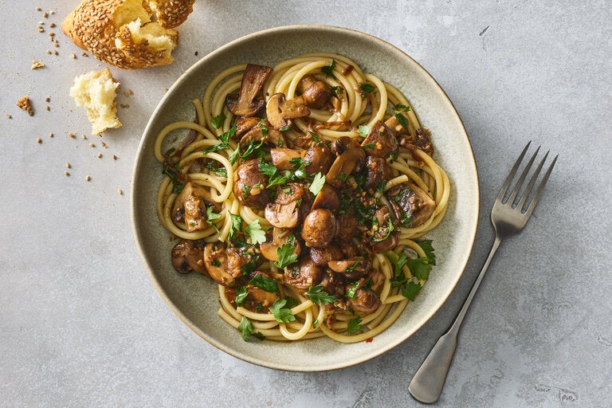

Mushroom Scampi

description
While most scampi recipes feature shrimp rather than the namesake small, lobster-like crustaceans, this mushroom version is a joyful meat-free alternative. All of the signatures are here – garlic, butter and white wine – and the mushrooms add a rich, earthy umami element. There is room to vary your mushrooms; while cremini or button mushrooms are great because they remain juicy and plump, oyster or shiitake mushrooms would add a pleasing, chewier texture. This dish is also parsley heavy; some is cooked with the mushrooms and the rest is added fresh, delivering a clean herbaceousness that brightens the dish. Eat with pasta, noodles or bread.
ingredients
- 2 tablespoons unsalted butter
- 2 tablespoons extra virgin olive oil
- 1 shallot, thinly sliced
- 1 ½ pounds cremini or button mushrooms, halved, quartered if large
- 4 garlic cloves, finely chopped
- ½ cup dry white wine
- ½ cup vegetable stock or water
- 1 teaspoon kosher salt (such as Diamond Crystal)
- ¼ teaspoon red-pepper flakes, or more to taste
- Black pepper
- ½ cup parsley leaves (tightly packed), roughly chopped
- 3 to 4 tablespoons lemon juice (from 1 to 2 lemons)
- Pasta, noodles or crusty bread, to serve
steps
- Heat a large 12-inch skillet over medium. Melt the butter and oil, then add the shallot, stirring until softened slightly, about 1 minute. Add the mushrooms and cook until the mushrooms are soft but still plump, 3 to 5 minutes. Add the garlic and toss until fragrant, 15 to 20 seconds.
- Add the wine, vegetable stock, salt, red-pepper flakes, a few pinches of black pepper and half the parsley. Increase heat to medium-high and cook, stirring occasionally, until the wine has reduced by half and thickened slightly, 3 to 5 minutes.
- Remove from heat and stir in the lemon juice. Taste and season with salt, if desired.
- To serve, top with remaining parsley and eat with pasta, noodles or crusty bread.